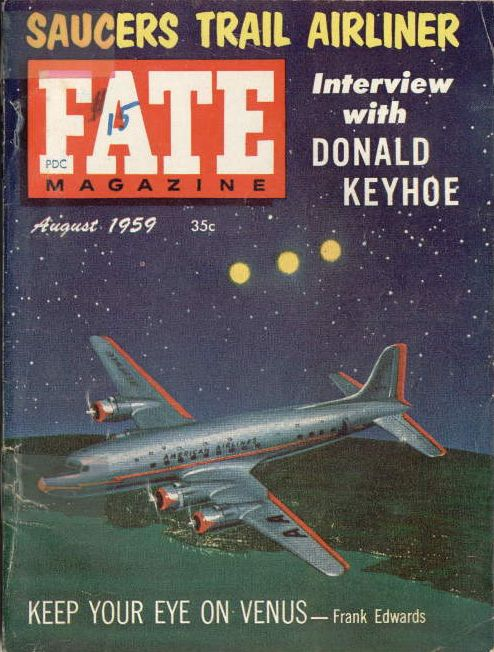

Gerry Irwin se
réveille, persuadé d'être le . Il est reconduit à l'hôpital William Beaumont.
A Ostralece (Pologne), Witold Sambrowski,
ingénieur en électronique voit avec plusieurs autres témoins 2 objets en forme de cigare voler sans bruit vers l'ouest
dans un ciel clair et calme. Ils sont d'un rose rougeâtre et semblent plus lumineux à l'avant. Leur longueur
est à peu près le double de la pleine Lune et ils sont espacés l'un de l'autre de 3 ou 4 fois leur longueur
Zaleski, Casimir: Le Courrier Interplanétaire n° 51, septembre 1961.
au Observation à Corsica (Pennylvanie)Cas
Blue Book n° 6317 non résolu.
Un cargo C-118 qui a décollé de la base aérienne militaire de Mac Chord (Washington),
entre en collision avec un objet lumineux inconnu. Plusieurs témoins voient 2 lumières jaune-orangé
s'approcher de l'avion. L'équipage a le temps d'envoyer un message de détresse avant de s'écraser : Nous
avons touché quelque chose... ou quelque chose nous a touché ! MAYDAY, MAYDAY, cette fois ça y est, cette
fois ça y est !.
Photographie du météore de Pribram depuis la station d'observation d'Ondrejov
A Pribram (République Tchèque), 1ère
photographie d'un météore.
La presse titre Une lueur rouge dans le ciel : une sphère noire avec une
lumière rouge a été observée au-dessus de St-Lambert, à l'Est de Montréal, par des centaines de témoins.
Gerry Irwin quitte le
Fort Bliss en direction de Cedar City.
Gerry Irwin arrive à
Cedar City et se rend sur le lieu de son observation. Il retrouve sa vareuse disparue, un crayon dedans, et
brûle un papier enroulé autour de ce dernier. Comme sorti d'une transe, il retrouve avec difficulté le
chemin de Cedar City.
Le docteur Jessup est
trouvé mourrant dans sa fourgonnette (voiture ?) dans un jardin public du comté de Dade, asphixié par un
tuyau attaché au pot d'échappement de son véhicule et passé par la vitre d'une portière.
Fin du monde prévue pour un petit groupe à la station de Point Reyes (Californie),
dirigé par une femme aux cheveux sombres, croyant que des extraterrestres transformeraient leur meetinghouse
de Inverness en une soucoupe volante à ce moment-là Le groupe inspira Phil Dick pour écrire son roman Confessions
of a Crap Artist.
Photographies de Aguiar
Helio Aguiar dit avoir photographié un ovni au-dessus de Piata Beach (Itapoa, Brésil) et s'être évanoui peu après. À son réveil il aurait
écrit un message demandant au monde d'arrêter tous les essais nucléaires. Les 4 photographies qu'il fournit
seraient en fait celles d'un plateau extrait d'un électrophone automatique Collaro Conquest, dénué de son
cercle en caoutchouc, jeté en l'air.
Un autre avion à réaction est envoyé pour intercepter un objet stationnaire repéré au radar sur la côte
Nord-Est du Japon. Le pilote voit l'objet et est autorisé à tirer. Les missiles n'ont aucun effet sur l'objet
inconnu qui commence à poursuivre l'avion alors que le radar suit la scène. Les 2 signaux se superposent,
l'objet unique qui en résulte reste stationnaire un moment puis disparaît. Les recherches conduites pendant
plusieurs jours échouent : on ne retrouve aucune trace du jet. On aura beau avancer le fait que l'avion a
disparu au-dessus de l'eau, il n'en reste pas moins que les radars n'ont jamais détecté aucune chute après la
"réunion" des "blips", qu'un crash localisé avec précision en mer laisse des traces en surface et que l'un des
aéronefs est reparti par ses propres moyens, ce qui exclu pour ce qui le concerne les effets dévastateurs d'une
collision Maccabee.
Observation à Edmonton, Alberta (Canada)Cas
Blue Book n° 6400 non résolu.
Observation à Patuxent River (Maryland)Cas Blue Book n° 6409 non résolu.
L'Aurore du 27 juillet, contenant un article sur La soucoupe volante anglaise Gerry Irwin réintègre
l'hôpital.
Observation à Irondequoit (New York)Cas
Blue Book n° 6446 non résolu.
Comme annoncé par une transe de Ray Stanford 6 jours plus tôt, lui et un ami parviennent à capturer
l'image d'un ovni ou d'ovnis qu'ils observent depuis Corpus Christi. L'image sur les films cependant manque de
toute structure identifiable, l'ovni étant trop éloigné Kottmeyer, Martin S.: "Still
Waiting: A List of Predictions from the 'UFO Culture'", The Anomalist, 1998.
Couverture de Fate en août

Gerry Irwin ne se présente
pas à l'appel.
Explorer 6 envoie les premières images de la Terre.
Observation à la base aérienne de Goose (Labrador)Cas Blue
Book
n° 6462 non résolu.
A Uberlandia (Brésil), de nombreux
témoins observent un objet volant lumineux qui suit une ligne à haute tension. A son approche mes commutateurs
sautent et plongent la région dans l'obscurité. Après son passage les appareils se repositionnent et le courant
se rétablit. Aucun dégât n'est constaté par la suite sur les installations.
Gerry Irwin est déclaré
déserteur. On ne le reverra plus jamais.
Observation à la base aérienne de Bunker Hill (Indiana) cas Blue Book
n° 6507 non résolu.
2 physiciens de l'université de Cornell publient un article dans lequel ils évoquent
l'utilisation des micro-ondes pour les communications interstellaires. Ils recommandent l'écoute sur la
fréquence de 1420 MHz Morrison, P. & Cocconi, Giuseppe: "Searching
for Interstellar Communications", Nature, vol. 184, n° 4690, pp. 844-846, 19 septembre 1959 — Lettre séminale qui énumère nombre des idées qui seront discutées à la réunion de "l'Ordre du Dauphin" organisée par Drake au NRAO en 1961. Cet article motivera Frank Drake pour son projet OZMA.
L'USGS prend une photo (13-146) de la base de Groom Lake dans le cadre d'un programme de cartographie de routine,
toujours disponible.
Observation radar à Redmont (Oregon)Chauvin,
R.:
1973.
Couverture de Fate en octobre, posant la question : "Un vaisseau spatial a-t-il explosé
en Sibérie ?"
Observation à Telephone Ridge (Oregon)Cas
Blue Book n° 6534 non résolu.
1ère photo de la face cachée de la Lune, par Luna 3.
Observation aux Philippines Cas Blue
Book n° 6538 non résolu.
Observation à Lincoln (Nebraska)Cas
Blue Book n° 6543 non résolu.
Observation à Plainville (Kansas)Cas
Blue Book n° 6563 non résolu.
Une maquette grandeur nature d'un A-12 est livrée à Groom Lake, par
camion, pour des tests de signature radar McIninch.
Observation au sud de Crystal Springs (Mississippi)Cas Blue Book n° 6600 non résolu.
Le Général Inspecteur de l'USAF émet l'Ordre d'Opérations
et de Formation suivant : Les Objets Volants Non Identifiés — parfois traité de manière légère par la
presse et référencés comme "soucoupes volantes" — doivent être rapidement et précisément identifiés
comme un sujet sérieux pour l'Air Force...Edwards, Frank: Flying
Saucers-Serious Business, NY: Lyle Stuart, 965. p. 315 et doivent finalement être communiquées au
public (inverse ?).
U.S., Proberta (Californie) : La radio d'un camion fait un bruit de claquement et
les phares pâlissent. Le conducteur décide se s'arrêter et de sortir. Il voit alors une forme de croissant vert brillant à 1/4 de
mile derrière son camion pick-up. Il a l'impression d'être aspiré dans l'espace. Le croissant reste alors en place,
se balançant d'avant en arrière. Il part ensuite brusquement vers le nord-est, hors de vue en 6 à 8 s. La
batterie du camion a fondu et les fils sont brûlés CUFOS < Rodeghier: "UFO
Reports Involving Vehicle Interference - A catalogue and data analysis", octobre 1981.
Hynek met en place un certain nombre de rencontres informelles entre les
membres du projet Blue Book et de l'ATIC. Il est décidé d'employer le terme d'Objet Volant Non Identifié
et de réexaminer les cas en fonction des connaissances scientifiques du moment.
Ruppelt change la conclusion de son livre publié 3 ans plus tôt.
A Rock Hill (Missouri), le fermier Wallace Baker est presque clobbered par une chaîne
de 18 pouces faite de liens de fer alors qu'il utilise un bulldozer pour nettoyer un terrain. La chaîne est rouge
brûlante lorsque Baker la ramasse, avec des gants.
Selon certaines sources, les Etats-Unis établissent des communications primitives avec des extraterrestres.
Un objet étrange tombe dans le port de Frdynia (Pologne). Des plongeurs récupèrent un
morceau de métal brillant, qui aurait été examiné par l'Institut Polytechnique et la Marine Polonais, mais une
partie en aurait disparu. Dans les jours qui suivent, le corps d'un petit humanoïde découvert sur une plage des
environs serait envoyé en Union Soviétique.